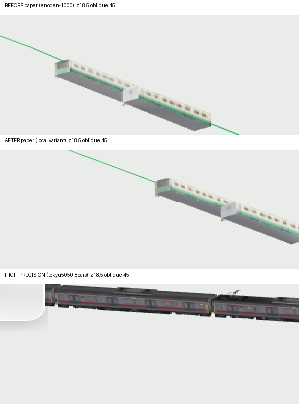
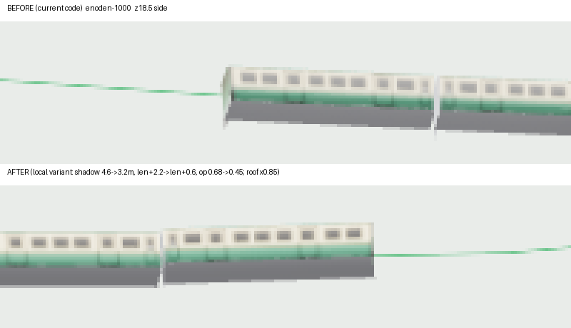
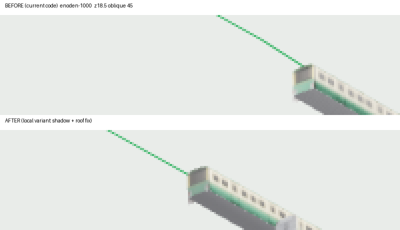
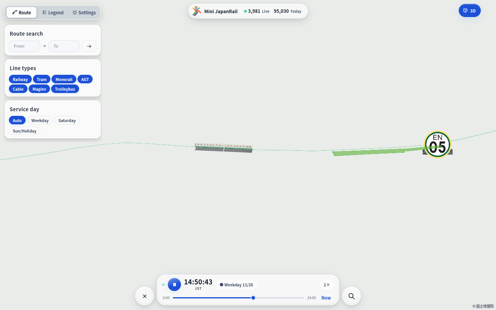
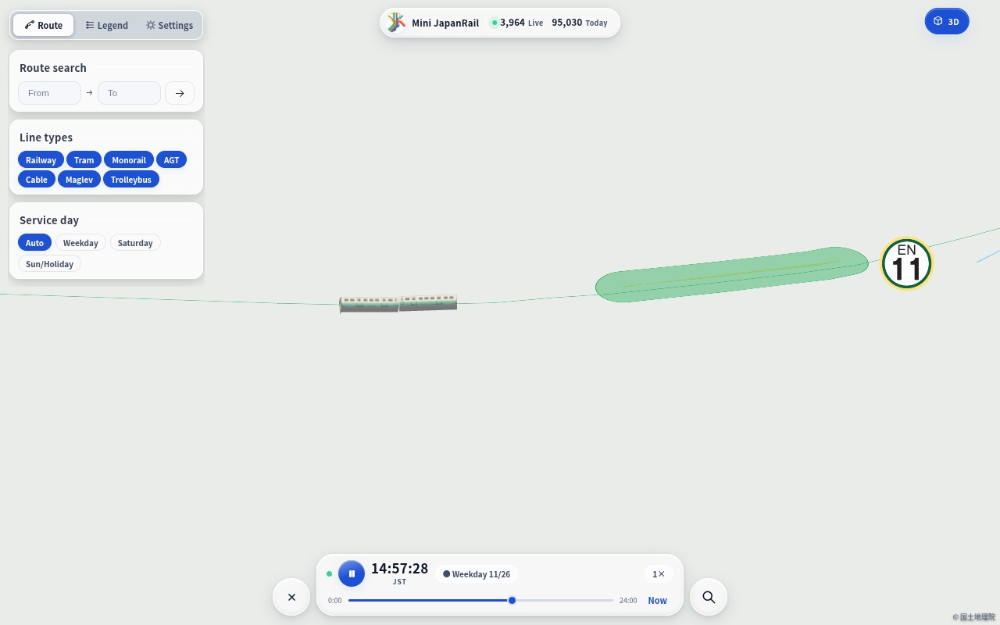
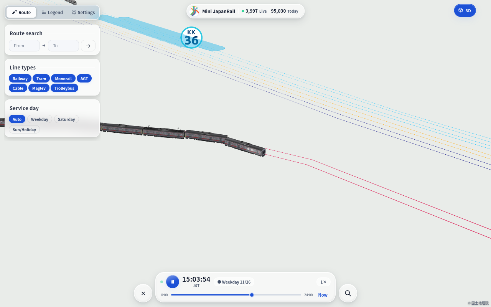

一句话结论
同缩放 z=18.5、同视角（pitch 60°、斜 45°）下，高精度东急 5050 是完整立体车厢，纸模江之电 1000 还是只有一面墙 + 一个底。两者都是 full LOD、精细涂装——不是 LOD 的问题，是纸模本身的渲染问题。中缩放下的半透明色块是 LOD 设计，不用管。
根因（已量化实测）
| 成因 | 实测数字 |
|---|---|
| ① 车顶看不见 | 车顶纹理本身是中灰 (119)，被地图强光（主光 1.75 + 半球 0.6 + 环境光 0.42 + RoomEnvironment，ACES 曝光 1.3）洗亮约 100 级，渲染后 (217,225,217)；侧视下车顶只剩约 2 px 发丝带，与淡色底图 (233,236,233) 对比仅约 16/255，几乎同色。查看器用同一套色调映射/曝光，车顶能看清是因为深色背景（#0b0f16）+ 可旋转近距离视角，不是渲染器不同。 |
| ② “底”比墙还显眼 | 模型自带深色底板（dark，0.15）+ 每节车下的阴影椭圆（宽 4.6 m、长=车长+2.2 m、不透明度 0.68）合成约 6 px、RGB ~128 的深色横带，与底图对比约 105/255，是车顶对比度的约 6.5 倍、高度的约 3 倍。 |
| ③ 单面材质已排除 | 纸模材质确为 doubleSided: false，但法线全部朝外、三角数 22,256 = GLB 总数，没有任何面被剔除。DoubleSide 改了也看不出区别，是无效项，已从修复清单里划掉。 |
两项修复（本地变体，未推送）
变体只改 variant/app/train3d.js 14 行（均标 WALLFIX-LOCAL-ONLY），其余文件与部署代码逐字节一致：
- ① 阴影椭圆收窄调淡：宽 4.6 → 3.2 m、长 车长+2.2 → 车长+0.6 m、不透明度 0.68 → 0.45。
- ② 车顶压暗 0.85：只对 GLB 自带有名车顶材质（
roof1/roof2）压暗；高精度 extMaterial 无名，不受影响。
效果（实测）：侧视车顶对比度 16 → 33–60（约 4 px、RGB 173–200，已可辨）；“底”带收窄变淡，不再像一块厚地板。斜 45° 下改善最明显。两项各管一半，缺一不可：只修阴影，车顶仍看不见；只修车顶，“底”仍是一块厚地板。
三幅并排：纸模修前 / 纸模修后 / 高精度

✅ 修后介于两者之间：底板收窄变淡、车顶略深，更像一个实心盒子；但仍不及高精度（高精度车顶是带空调机组、受电弓的深灰 3D 面，纸模车顶是平顶薄片）。
侧视修前 vs 修后

✅ 改善可见：修后“底”带明显收窄变淡，车顶多了一条可辨的灰边。但注意：纯侧视下车顶仍只是一条边（见下一节）。
斜 45°修前 vs 修后

✅ 斜视角是改善最明显的角度：能看到车顶面，修后车厢更像实心盒子。
单张对照

修前侧视：车顶几乎看不见，“底”带与侧墙等高。

修后侧视：底带收窄变淡，车顶边缘可辨。

高精度对照（东急 5050，斜 45°）：深灰车顶面 + 3D 设备 + 侧墙俱全，一眼就是立体车厢。
⚠️ 诚实说明：这两项是必要条件，不是充分条件
纸模车顶是平顶薄片、无 3D 设备，纯侧视下它永远只是一条边——渲染端压暗只能让它可辨，不能让它变成立体面。要“跟查看器一样立体”，斜视角下才成立。若要侧视也立体，得改模型（加 3D 受电弓/空调，11:53 已禁，另议）。
请示：请松口最小集合（只两项）
① 阴影椭圆收窄调淡（4.6 → 3.2 m、长+2.2 → 长+0.6、不透明度 0.68 → 0.45）
② 车顶压暗 0.85（仅纸模有名车顶材质，高精度不受影响）
DoubleSide 不用松（无效，已划掉）。
现状：什么都没推。测试仓库远端 HEAD 仍是 0d936fb，本地克隆干净，变体只在专员工作目录里。等用户点头后，再把这两项推到测试站。